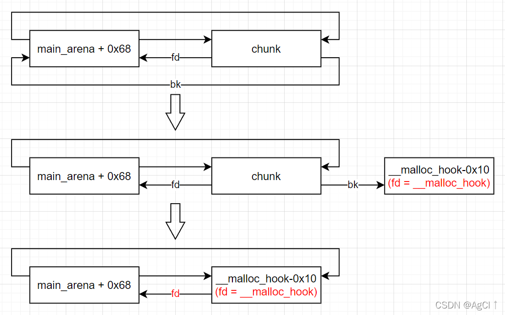

how2heap下载网址: 传送门
Glibc源码查看网址：传送门
参考书籍：CTF竞赛权威指南-pwn篇
测试环境：Ubuntu 16.04
Glibc版本：Ubuntu GLIBC 2.23-0ubuntu11.3
前两周事情比较多，暂停了pwn的复习，今天继续。
按照顺序，本文分析glibc 2_23文件夹中的第9~11个源码。
9. house_of_roman
这是一种需要进行暴力猜解的漏洞，在开启PIE时仍然有效。我们来看下源码是如何操作的。
Step 1: 控制__malloc_hook
首先创建了4个chunk，大小分别为0x70, 0x90, 0x90, 0x70。
| number | size | name |
|---|---|---|
| 1 | 0x70 | fastbin_victim |
| 2 | 0x90 | <anonymous> |
| 3 | 0x90 | main_arena_use |
| 4 | 0x70 | relative_offset_heap |
之后将第3个chunk释放，其fd和bk指针将指向main_arena + 0x68的位置。
接下来再分配一个0x70大小的chunk(name: fake_libc_chunk)，分配后原先的unsorted bin会被分割一部分，剩下0x21大小仍为unsorted bin，而此时在fake_libc_chunk中已经有了main_arena + 0x68的地址了。
后面，依次释放relative_offset_heap和fastbin_victim。此时bins的结构为：
1 | fastbins |
堆的结构为：
1 | Free chunk (fastbins) | PREV_INUSE |
之后，将第一个chunk的fd指针部分覆盖（覆盖最低1字节为0），那么此时第一个chunk指向的就是0x555555757100处，也就是刚分配的0x70空间的首部。此操作完成之后，堆结构变为：
1 | Free chunk (fastbins) | PREV_INUSE |
bins的结构为：
1 | fastbins |
之后，我们就可以将0x555555757100（此时实际上并不是freed chunk）的fd指针修改为malloc_hook - 0x23。但是由于开启了PIE，因此需要爆破4个比特位，即16选1。
注意：PIE会对地址进行随机化处理，但是一页之内的地址还是一样的，也就是说，开启和不开启PIE时地址的最低12bit是完全相同的。我们可以获取libc中malloc_hook的相对地址，其低12bit可以获得，但覆盖是整个字节覆盖，因此我们需要猜解随机化地址的倒数第2低字节中的高4位。覆盖地址为0x555555757100的chunk的fd指针的低2字节，如果爆破成功，后面连续分配两个0x70大小chunk后再分配一个即将fastbin挟持到__malloc_hook。
这是__malloc_hook前面一部分内存空间的情况。
| addr | +0 | +1 | +2 | +3 | +4 | +5 | +6 | +7 |
|---|---|---|---|---|---|---|---|---|
| 0x7ffff7bcdae8 | 00 | 00 | 00 | 00 | 00 | 00 | 00 | 00 |
| 0x7ffff7bcdaf0(_IO_wide_data_0+304) | 60 | c2 | bc | f7 | ff | 7f | 00 | 00 |
| 0x7ffff7bcdaf8 | 00 | 00 | 00 | 00 | 00 | 00 | 00 | 00 |
| 0x7ffff7bcdb00(__memalign_hook) | a0 | ee | 88 | f7 | ff | 7f | 00 | 00 |
| 0x7ffff7bcdb08(__realloc_hook) | 70 | ea | 88 | f7 | ff | 7f | 00 | 00 |
| 0x7ffff7bcdb10(__malloc_hook) | 00 | 00 | 00 | 00 | 00 | 00 | 00 | 00 |
我们现在解释为什么要将地址挟持到__malloc_hook - 0x23处。
fastbin的重新分配会进行一个检查：后面一个fastbin的大小是否在fastbin可以容纳的chunk的大小范围之内。因此我们需要转移到一个这样一个地址，这个地址后面对应的size域有一个0x20~0x80的值。看到上面的表，我们想借用7f。如何借用？注意到0x7ffff7bcdaf5处有一个7f（这个7f一般是固定不变的），而且这之后有10个字节都是0，如果我们从这里开始读8个字节，那值就正好是0x7f，不会超过0x80。所以考虑将0x7ffff7bcdaed作为chunk的头部，这样读取到的size就可以通过检查。Step 2: Unsorted bin attack
在第一步中，我们成功将fastbin挟持到了__malloc_hook处。但是由于libc的加载地址仍然未知，现在我们能做的仍然非常有限。因此下一步我们准备进行一次unsorted bin attack。
首先分配一个0x90大小的chunk(name: unsorted_bin_ptr)，之后分配一个0x30大小的chunk防止unsorted bin与top chunk合并。下面就是常规的unsorted bin attack流程：
释放unsorted_bin_ptr，利用UAF将其bk指针修改为__malloc_hook - 0x10（这里只需要修改最低2字节，而且这在第一步已经通过爆破获取）。然后将这个unsorted bin分配出来，这样main_arena + 0x68被修改为__malloc_hook - 0x10，同时__malloc_hook被修改为main_arena + 0x68（这是双向链表中元素脱链的标准操作，即要脱链的为chunk，则需将chunk->bk->fd指向main_arena + 0x68，main_arena + 0x68指向chunk->bk，图示如下）

Step 3: getshell
之后，我们需要利用挟持到__malloc_hook的chunk部分修改__malloc_hook的值。首先，我们在第一步已经通过爆破获取了__malloc_hook地址的低2字节，根据这低2字节，我们可以在libc中获取到system加载地址的低2字节。
例如，libc6_2.23-0ubuntu11.3_amd64版本中system地址为0x453a0，__malloc_hook地址为0x3c4b10。假如爆破成功时__malloc_hook加载地址的低2字节为0x8b10，那么说明加载地址等于相对地址加上(0x400 + n * 0x1000)。即system加载地址的低2字节应为0x93a0。
我们获取到system地址的低2字节后，需要爆破system地址第3小的字节。注意到0x3c4b10 - 0x453a0 = 0x37f770，system的地址和__malloc_hook的地址除低3字节外剩余部分很有可能相等。因此只对第3小的字节进行爆破即可。
随机猜解system地址如果成功，在之后进行malloc，参数可以填one_gadget，这样就可以成功获取shell。
综上所述，house_of_roman一共需要爆破12比特位，加上加载地址可能造成的影响，爆破成功的概率应该略低于 1 / 2^12，多试几次就可以getshell。
10. house_of_spirit
这是一种常用的堆漏洞，核心思想也很简单：在目标地址伪造一个chunk并引导libc将这块内存释放，下一次malloc即可分配到目标地址处。
这里需要注意的就是伪造堆块的方法。
重要：_int_free函数的fastbin检查：
-
检查堆块的size是否过大到不切实际
-
检查chunk是否对齐（x64的chunk头必须是0x8对齐的，即最低4bit只能为0或8）
上述两种检查如果没有通过，直接报错中止，源码如下：
1 | size = chunksize (p); |
- 检查size是否过小以及size是否对齐，即size不能小于0x20且在x64中也要是0x8对齐，否则报错中止。源码如下：
1 | if (__glibc_unlikely (size < MINSIZE || !aligned_OK (size))) |
- 检查下一个chunk的大小，不能小于
2 * SIZE_SZ（即0x10），也不能大于av->system_mem（应该是一个很大的值），源码如下：
1 | if (__builtin_expect (chunk_at_offset (p, size)->size <= 2 * SIZE_SZ, 0) |
- 检查fastbin的第一个chunk是否是当前释放的chunk，防止double free。源码如下：
1 | fb = &fastbin (av, idx); |
在house_of_spirit中，第2个检查一般都是满足的，绕过第1个检查需要将目标地址看做一个chunk，对应size的地址处应该写入一个0x20~0x80且能够被0x8整除的数，以绕过第1, 3个检查。第4个检查的绕过需要一些小技巧。假设在目标地址处我们可以控制0x60的空间，那么我们的size不应该写成0x60而是小于0x60，这样方便我们在后面伪造next chunk的size。第5个检查一般没有问题。
所有这些工作做好之后，就可以先释放再分配了。分配完成后就可以在目标地址处获取一个chunk。一般来说house_of_spirit是作为跳板来使用的，在目标地址获取chunk能够很好地为其他攻击手段做准备。
11. house_of_storm
关于此利用方式，源码中的说明是可以向用户返回任意一个chunk。
首先，程序分配了两个chunk，一个进入unsorted bin，一个进入large bins，且unsorted bin中的chunk大小大于large bins中的chunk。在源码中，unsorted bin chunk的大小设定为0x4f0，同时分配一个小chunk防止其在释放时与top chunk合并。
之后，源码中以这个chunk的最高非0字节为参考，计算了需要分配的chunk的大小。将最低1bit置0（因为这里在chunk的size中代表的是prev_in_use标志位），这里需要进行检查：最低1字节的bit-3不能为1，若bit-2为1则bit-1不能为0，至于原因，后面会提到。
如果上述检查通过，则进行接下来的操作。分配一个大小为0x4e0的chunk，再加上一个小chunk防止与top chunk合并。之后释放0x4e0大小的chunk和0x4f0大小的chunk（这里注意要首先释放较小的chunk），然后分配一个0x4f0大小的chunk。这样由于unsorted bin在malloc时遵循先进先出的队列结构，会首先检查到小chunk，而小chunk大小不足，会被链入到large bins中。然后再将0x4f0大小的chunk释放，返还到unsorted bin中，bins的环境就构造完成了。
1 | fastbins |
然后，我们需要使用unsorted bin attack，覆盖unsorted bin chunk的bk指针为(目标地址 - 0x10)处，覆盖large bin chunk的bk指针到(目标地址 - 0x8)处，覆盖large bin chunk的bk_nextsize。之后，malloc即可获取目标地址的chunk。
但是，为什么会这样呢？这需要从_int_malloc函数中寻找答案。
本漏洞利用中_int_malloc函数中重要步骤：
参考博客（有分析全过程）：_int_malloc函数详解
-
如果申请大小在fastbin范围则从fastbin中查找是否有合适的chunk。
-
如果申请大小在small bins范围则从small bins中查找是否有合适的chunk。
-
前2步没有找到调用malloc_consolidate函数整理堆块
-
大循环：
(1) 从unsorted bin中获取当前遍历到的chunk
(2) 如果申请大小在small bins范围且last remainder可以切割一部分给申请堆块，则切割后返回
(3) 如果申请大小正好等于当前遍历到chunk的大小，则直接返回
(4) 将当前unsorted bin chunk放入small bins或large bins中：
如果当前遍历到的unsorted bin chunk的大小属于small bins范围则放入对应的small bin中。
如果属于large bins范围，则需要进行一些处理：
因为large bins中的每一个bin里面的chunk大小均是一个范围值而不是固定值，所以libc会对每一个large bin中的chunk按照大小进行排序，large bin chunk的fd和bk指针指向前后chunk，而fd_nextsize和bk_nextsize指向前后第一个与该chunk大小不同的chunk，便于遍历。所以，libc会遍历该large bin并将这个原本在unsorted bin中的chunk放入正确的位置。在house of storm中，至关重要的就是下面的入链操作：
1 | victim->fd_nextsize = fwd; |
这里要尤其注意第4条语句，这是唯一一条修改目标地址值的语句。
（victim = unsorted bin chunk，fwd = large bin chunk）
在此之前，分别位于unsorted bin和large bins的两个chunk的构造如下：
unsorted bin chunk:
| addr | +0x0 | +0x8 |
|---|---|---|
| 0x603000 | 0 | 0x4f1(size) |
| 0x603010 | main_arena + 0x68 | target-0x10 |
| 0x603020 | 0 | 0 |
large bin chunk:
| addr | +0x0 | +0x8 |
|---|---|---|
| 0x603510 | 0 | 0x4e1(size) |
| 0x603520 | main_arena + 1144 | target-0x8 |
| 0x603530 | 0x603510(fd_nextsize) | target-0x2a(bk_nextsize) |
在执行完上述4步之后，结构变为：
unsorted bin chunk:
| addr | +0x0 | +0x8 |
|---|---|---|
| 0x603000 | 0 | 0x4f1(size) |
| 0x603010 | main_arena + 0x68 | target-0x8 |
| 0x603020 | 0x603510 | target-0x2a |
large bin chunk:
| addr | +0x0 | +0x8 |
|---|---|---|
| 0x603510 | 0 | 0x4e1(size) |
| 0x603520 | main_arena + 1144 | target-0x8 |
| 0x603530 | 0x603510 | 0x603000 |
同时(target-0x2a)->fd_nextsize被写入为0x603000，也即target-0xa处被写入为0x603000：
| addr | 0 | 1 | 2 | 3 | 4 | 5 | 6 | 7 |
|---|---|---|---|---|---|---|---|---|
| target-0x10 | – | – | – | – | – | – | 00 | 30 |
| target-0x8 | 60 | 00 | 00 | 00 | 00 | 00 | 00 | 00 |
| target | ||||||||
| target+0x8 |
如果将target-0x10看做chunk头，那么这里正好写入了一个正确的size，即0x60！这也就能够解释为什么源代码一开始要将unsorted bin chunk地址的高位作为size，且需要通过一系列检查了。通过了一系列检查，然后像这样错位写入，就正好能够伪造正确的size！这样，_int_malloc函数就能够为我们返回这个地方的地址了。
对于这个漏洞的利用的理解需要对_int_malloc函数有充分的理解，利用unsorted bin chunk被链入到large bins的过程对堆结构进行攻击。